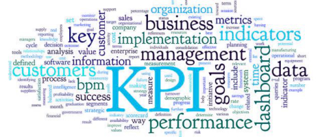

Information Presentation I

Slides: KPI's, Business Performance Management (BPM)
Information Presentation I
Reading: KPI Challenges
Lab-11
In this lab you will develop several different types of groups and investigate table design.
Lab-12
In this lab you work on advanced interface design.